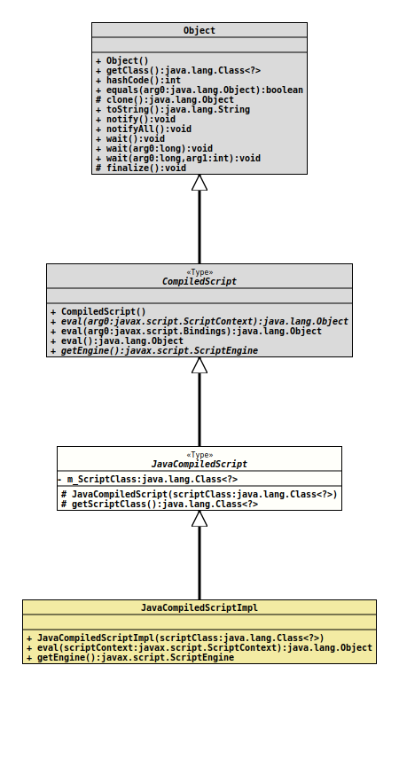

Class JavaCompiledScript
java.lang.Object
javax.script.CompiledScript
org.tquadrat.foundation.scripting.java.JavaCompiledScript
- Direct Known Subclasses:
JavaEngineImpl.JavaCompiledScriptImpl
@ClassVersion(sourceVersion="$Id: JavaCompiledScript.java 878 2021-02-20 19:56:13Z tquadrat $")
@API(status=STABLE,
since="0.1.0")
public abstract sealed class JavaCompiledScript
extends CompiledScript
permits JavaEngineImpl.JavaCompiledScriptImpl
The base class for an implementation of
CompiledScript
for the Java language.- Author:
- Thomas Thrien (thomas.thrien@tquadrat.org)
- Version:
- $Id: JavaCompiledScript.java 878 2021-02-20 19:56:13Z tquadrat $
- Since:
- 0.1.0
- UML Diagram
-

UML Diagram for "org.tquadrat.foundation.scripting.java.JavaCompiledScript"
{kind=link}
-
Field Summary
FieldsModifier and TypeFieldDescriptionprivate final Class<?> The class that is represented by this object. -
Constructor Summary
ConstructorsModifierConstructorDescriptionprotectedJavaCompiledScript(Class<?> scriptClass) Creates a newJavaCompiledScriptinstance. -
Method Summary
Modifier and TypeMethodDescriptionprotected final Class<?> Returns a reference to the Java class that is represented by this script.Methods inherited from class javax.script.CompiledScript
eval, eval, eval, getEngine
-
Field Details
-
m_ScriptClass
The class that is represented by this object.
-
-
Constructor Details
-
JavaCompiledScript
Creates a newJavaCompiledScriptinstance.- Parameters:
scriptClass- The class that is represented by this compiled script.
-
-
Method Details
-
getScriptClass
Returns a reference to the Java class that is represented by this script.- Returns:
- The reference to the class object.
-